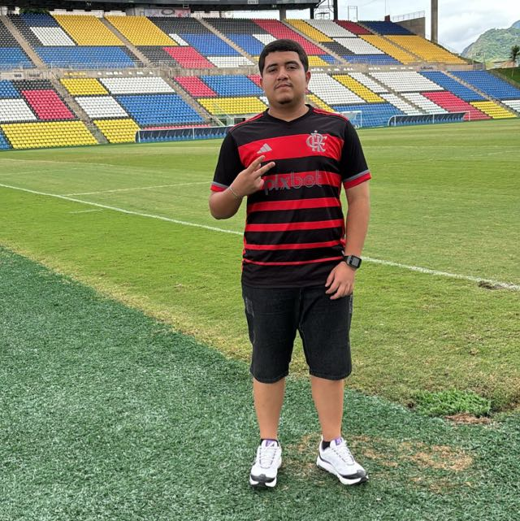
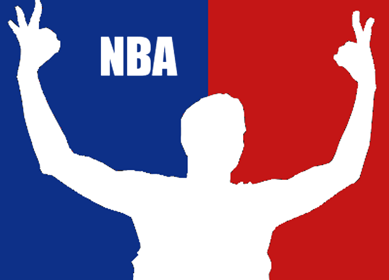

Nasci em Pedro Canário - ES, onde vivi durante toda minha infância e adolescência. Cresci com minha mãe e minha avó, e ao longo da vida também morei com meu avô. Sempre gostei muito de esportes, principalmente futebol e basquete. Participei de escolinhas e campeonatos locais. Após concluir o ensino médio, me mudei para Vila Velha para iniciar minha graduação.
Pretendo atuar na área de Inteligência Artificial, além de concluir mestrado e doutorado futuramente.
Boa comunicação
Trabalho em equipe
Proatividade
Conhecimentos básicos de informática
Assistir NBA (Boston Celtics)
Futebol (Flamengo)
Jogos online (PC e Playstation)
Assistir vídeos no YouTube
Ouvir músicas (principalmente Rock)
Ensino Fundamental: E.E.E.F Pedro Canário Ribeiro
Ensino Médio: IFES - Montanha (Administração) - 2023 a 2025
Faculdade: UVV - Ciência da Computação (cursando)
Palestra: Química Forense
Mesa-redonda: Rússia e Ucrânia
Palestra: Sustentabilidade
SIPA
Oficina de tecnologias de mapeamento
| Matéria | Breve descrição da matéria |
|---|---|
| Construção de Software para Web | Aprendemos a criar sites utilizando HTML e conceitos básicos de CSS. |
| Banco de Dados | Estudo de modelagem de dados e criação de tabelas para armazenar informações. |
| Interface com Usuário | Foco na experiência do usuário e criação de interfaces mais intuitivas. |
| Lógica de Programação | Aprendizado de algoritmos e raciocínio lógico para resolução de problemas. |
| Fundamentos de Computação | Estudo dos conceitos básicos da computação e funcionamento dos sistemas. |

Motivation